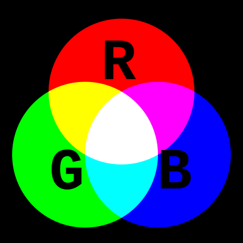

You can use afterimage-experiment.html to
experience negative afterimages. The afterimage-experiment.html is implemented with D3
transitions. A negative afterimage appears when fixating, because fixating lessens the response of the
associated photoreceptors. In practice this is prevented by micro-saccades. According to the
trichromatic
theory, depleted colors result in the perception of their complementary colors.
For example, if you stare at a red square for a while, and then look at a white sheet of paper, you will see a green square. This is because the red receptors are depleted, and the green receptors are not. The green receptors are then over-stimulated, creating the perception of green.
